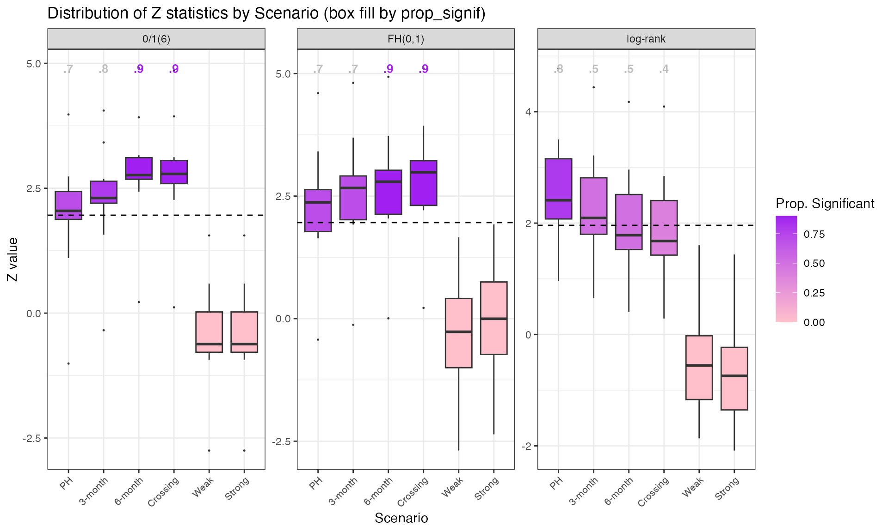
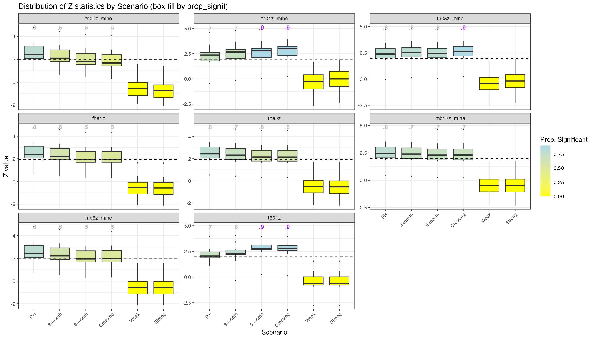
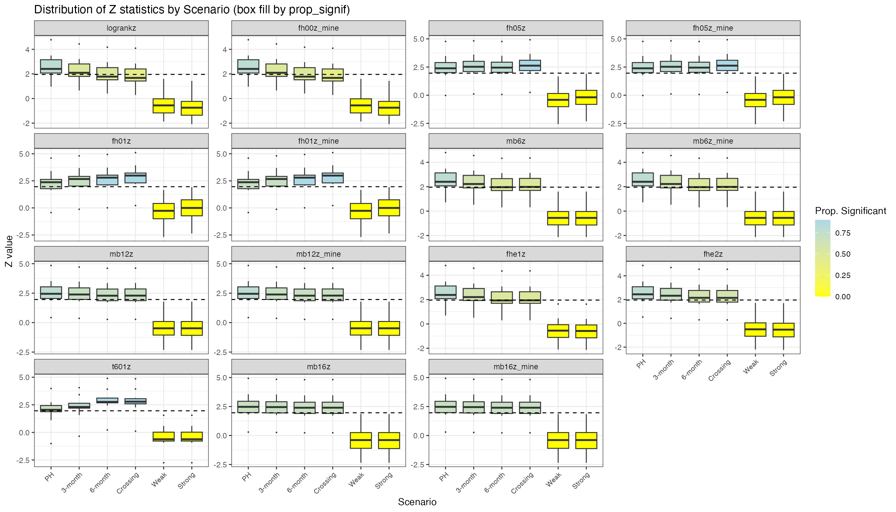

weightedsurv versus simtrial: Wald vs Log-Rank Simulation Analysis
Source:vignettes/articles/weightedcox_wald-vs-logrank_simulations.Rmd
weightedcox_wald-vs-logrank_simulations.RmdOverview
This vignette evaluates the operating characteristics of weighted
log-rank (WLR) tests and their corresponding Wald (weighted Cox model)
counterparts under various non-proportional hazards (NPH) scenarios. We
compare test statistics computed by weightedsurv with those
from simtrial to validate alignment, and examine the
correspondence between log-rank and Wald-based inference across
weighting schemes including Fleming-Harrington
,
Magirr-Burman, and a zero-one step-function weight.
The simulation framework uses simtrial for data
generation under piecewise-exponential models and
weightedsurv for weighted Cox regression, producing
z-statistics, hazard ratio estimates, standard errors, and confidence
intervals. We focus on a zero-one weighting scheme where
weights are zero for the first 6 months and one thereafter — a design
motivated by settings where treatment is “not active” by design during
an initial period, as in vaccine trials.
Six scenarios are evaluated: proportional hazards (PH), 3-month delayed effect, 6-month delayed effect, crossing hazards, weak null, and strong null.
Simulation Helper Functions
The following helper functions provide the simulation infrastructure:
general utilities (sim_utils), scenario definition
(sim_scenarios), and the parallel execution driver
(sim_driver).
Note: These functions will be included in a future CRAN release
of weightedsurv (in R/sim_utils.R,
R/sim_scenarios.R, and R/sim_driver.R). Once
available via library(weightedsurv), the three chunks below
can be removed and the remainder of this vignette will work
unchanged.
Simulation utilities
#' Check and load required R packages
#'
#' param: pkgs Character vector of package names to check.
#' Returns: Invisible TRUE if all packages are available.
check_required_packages <- function(pkgs) {
missing <- pkgs[!vapply(pkgs, requireNamespace, logical(1), quietly = TRUE)]
if (length(missing) > 0) {
stop("The following required packages are missing: ",
paste(missing, collapse = ", "),
". Please install them before running this function.",
call. = FALSE)
}
invisible(TRUE)
}
#' Set up parallel processing
#'
#' Configures a future parallel backend with defensive capping of
#' workers to available cores. Falls back gracefully on Windows
#' when "multicore" is requested.
#'
#' param: approach Character: "multisession", "multicore", or "callr".
#' param: workers Integer; number of parallel workers. Capped at
#' parallelly::availableCores(omit = 1).
#' Returns: Invisibly returns the actual number of workers used.
setup_parallel <- function(approach = c("multisession", "multicore", "callr"),
workers = 4) {
approach <- match.arg(approach)
check_required_packages("future")
library(future)
max_workers <- parallelly::availableCores(omit = 1L)
if (workers > max_workers) {
message("Requested ", workers, " workers but only ", max_workers,
" available. Capping at ", max_workers, ".")
workers <- max_workers
}
if (approach == "multisession") {
plan(multisession, workers = workers)
} else if (approach == "multicore") {
if (.Platform$OS.type == "windows") {
message("multicore not available on Windows; falling back to multisession.")
plan(multisession, workers = workers)
} else {
plan(multicore, workers = workers)
}
} else if (approach == "callr") {
check_required_packages("future.callr")
plan(future.callr::callr, workers = workers)
}
message("Parallel plan: ", approach, " with ", workers, " workers ",
"(", parallelly::availableCores(), " cores detected).")
invisible(workers)
}
#' Check if true value is covered by confidence interval
#'
#' param: target Numeric value to check.
#' param: ci List with elements lower and upper.
#' Returns: Integer: 1 if covered, 0 otherwise.
is_covered <- function(target, ci) {
ifelse(ci$lower <= target & ci$upper >= target, 1L, 0L)
}
#' Extract results from a weighted Cox model fit
#'
#' Extracts z-statistics, de-biased z-statistics, coefficient estimates,
#' standard errors, Wald upper confidence limits, and coverage indicators
#' from a cox_rhogamma() result object.
#'
#' param: fit_result Object returned by cox_rhogamma() with draws > 0.
#' param: prefix Character string prepended to each output column name.
#' param: hr_true Numeric; true hazard ratio for coverage evaluation.
#' If NULL, coverage columns are omitted.
#' Returns: A named list of scalar results.
extract_cox_results <- function(fit_result, prefix, hr_true = NULL,
z_name = NULL) {
if (is.null(z_name)) z_name <- paste0(prefix, "z")
res <- stats::setNames(
list(
fit_result$z.score,
fit_result$z.score_debiased,
fit_result$fit$bhat,
fit_result$hr_ci_star$beta,
fit_result$hr_ci_asy$upper,
fit_result$hr_ci_star$upper,
fit_result$fit$sig_bhat_asy,
fit_result$fit$sig_bhat_star
),
c(z_name,
paste0(prefix, c("z_debiased", "_bhat", "_bhatdebiased",
"_wald", "_waldstar", "_sigbhat", "_sigbhatstar")))
)
if (!is.null(hr_true)) {
res[[paste0(prefix, "_cover")]] <- is_covered(hr_true, fit_result$hr_ci_asy)
res[[paste0(prefix, "_coverstar")]] <- is_covered(hr_true, fit_result$hr_ci_star)
}
res
}#' Default NPH scenario table
#'
#' Returns six standard non-proportional hazards scenarios:
#' PH, 3-month delayed, 6-month delayed, crossing, weak null, strong null.
#'
#' param: surv_24 Experimental arm survival probability at 24 months
#' under PH (default: 0.35).
#' param: control_median Control arm median survival in months (default: 12).
#' Returns: A tibble with columns Scenario, Name, Period, duration, Survival.
default_nph_scenarios <- function(surv_24 = 0.35, control_median = 12) {
hr <- log(surv_24) / log(0.25)
control_rate <- c(log(2) / control_median, (log(0.25) - log(0.2)) / 12)
tibble::tribble(
~Scenario, ~Name, ~Period, ~duration, ~Survival,
0, "Control", 0, 0, 1,
0, "Control", 1, 24, .25,
0, "Control", 2, 12, .2,
1, "PH", 0, 0, 1,
1, "PH", 1, 24, surv_24,
1, "PH", 2, 12, .2^hr,
2, "3-month delay", 0, 0, 1,
2, "3-month delay", 1, 3, exp(-3 * control_rate[1]),
2, "3-month delay", 2, 21, surv_24,
2, "3-month delay", 3, 12, .2^hr,
3, "6-month delay", 0, 0, 1,
3, "6-month delay", 1, 6, exp(-6 * control_rate[1]),
3, "6-month delay", 2, 18, surv_24,
3, "6-month delay", 3, 12, .2^hr,
4, "Crossing", 0, 0, 1,
4, "Crossing", 1, 3, exp(-3 * control_rate[1] * 1.3),
4, "Crossing", 2, 21, surv_24,
4, "Crossing", 3, 12, .2^hr,
5, "Weak null", 0, 0, 1,
5, "Weak null", 1, 24, .25,
5, "Weak null", 2, 12, .2,
6, "Strong null", 0, 0, 1,
6, "Strong null", 1, 3, exp(-3 * control_rate[1] * 1.5),
6, "Strong null", 2, 3, exp(-6 * control_rate[1]),
6, "Strong null", 3, 18, .25,
6, "Strong null", 4, 12, .2
)
}
#' Build simulation setup from a scenario table
#'
#' Computes fail rates, hazard ratios, enrollment rates (via gsDesign2),
#' and dropout rates from any piecewise-exponential scenario table.
#'
#' param: scenarios Tibble with columns Scenario, Name, Period, duration, Survival.
#' param: control_median Control arm median survival in months (default: 12).
#' param: dropout_rate_value Constant dropout hazard per month (default: 0.001).
#' param: power_scenario Scenario index for sample size calculation (default: 2).
#' param: alpha One-sided type-I error (default: 0.025).
#' param: power Target power (default: 0.85).
#' param: study_duration Study duration in months (default: 36).
#' param: mb_tau Magirr-Burman delay parameter (default: 12).
#' param: enroll_duration Enrollment duration in months (default: 12).
#' Returns: List with fr, er, dropout_rate, n_sample, study_duration.
build_sim_scenarios <- function(scenarios,
control_median = 12,
dropout_rate_value = 0.001,
power_scenario = 2,
alpha = 0.025,
power = 0.85,
study_duration = 36,
mb_tau = 12,
enroll_duration = 12) {
check_required_packages(c("dplyr", "gsDesign2", "simtrial"))
control_rate <- c(log(2) / control_median, (log(0.25) - log(0.2)) / 12)
fr <- scenarios |>
dplyr::group_by(Scenario) |>
dplyr::mutate(
Month = cumsum(duration),
x_rate = -(log(Survival) - log(dplyr::lag(Survival, default = 1))) / duration,
rate = ifelse(Month > 24, control_rate[2], control_rate[1]),
hr = x_rate / rate
) |>
dplyr::select(-x_rate) |>
dplyr::filter(Period > 0, Scenario > 0) |>
dplyr::ungroup()
fr <- fr |> dplyr::mutate(
fail_rate = rate,
dropout_rate = dropout_rate_value,
stratum = "All"
)
mwlr <- gsDesign2::fixed_design_mb(
tau = mb_tau,
enroll_rate = gsDesign2::define_enroll_rate(duration = enroll_duration, rate = 1),
fail_rate = fr |> dplyr::filter(Scenario == power_scenario),
alpha = alpha,
power = power,
ratio = 1,
study_duration = study_duration
) |> gsDesign2::to_integer()
er <- mwlr$enroll_rate
dropout_rate <- data.frame(
stratum = rep("All", 2),
period = rep(1, 2),
treatment = c("control", "experimental"),
duration = rep(100, 2),
rate = rep(dropout_rate_value, 2)
)
list(
scenarios = scenarios,
fr = fr,
er = er,
dropout_rate = dropout_rate,
n_sample = sum(er$rate * er$duration),
study_duration = study_duration
)
}#' Run weighted Cox model simulations in parallel
#'
#' Executes a user-defined per-trial analysis function across multiple
#' scenarios and replications using chunked parallelism via foreach/doFuture.
#'
#' param: sim_setup List returned by build_sim_scenarios().
#' param: analysis_fn Per-trial analysis function (see vignette for template).
#' param: n_sim Integer; number of replicates per scenario.
#' param: scenarios Integer vector of scenario indices (default: all).
#' param: hr_true Numeric; true HR for coverage (default: from PH scenario).
#' param: dof_approach Character; parallel backend (default: "callr").
#' param: num_workers Integer; number of parallel workers (default: 4).
#' param: seedstart Integer; base random seed (default: 8316951).
#' param: mart_draws Integer; martingale resampling draws (default: 100).
#' param: packages Character vector of packages for workers.
#' param: file_togo File path for saving results.
#' param: save_results Logical; save to file? (default: FALSE).
#' param: verbose Logical; print progress? (default: TRUE).
#' Returns: List with results_sims, timing, and metadata.
run_weighted_cox_sims <- function(sim_setup,
analysis_fn,
n_sim,
scenarios = NULL,
hr_true = NULL,
dof_approach = "callr",
num_workers = 4,
seedstart = 8316951,
mart_draws = 100,
packages = c("simtrial", "weightedsurv",
"data.table"),
file_togo = "results/sims_output.RData",
save_results = FALSE,
verbose = TRUE) {
required_pkgs <- c("foreach", "future", "tictoc", "doFuture", "data.table")
if (dof_approach == "callr") required_pkgs <- c(required_pkgs, "future.callr")
check_required_packages(required_pkgs)
if (!is.function(analysis_fn))
stop("analysis_fn must be a function.", call. = FALSE)
if (save_results) {
dir_name <- dirname(file_togo)
if (!dir.exists(dir_name))
stop("Directory does not exist: ", dir_name, call. = FALSE)
}
fr <- sim_setup$fr
dropout_rate <- as.data.frame(sim_setup$dropout_rate)
enroll_rate <- as.data.frame(sim_setup$er)
n_sample <- sim_setup$n_sample
if (is.null(scenarios))
scenarios <- sort(unique(fr$Scenario))
n_scenarios <- length(scenarios)
if (is.null(hr_true)) {
fr_PH <- fr[fr$Name == "PH", ]
if (nrow(fr_PH) == 0)
stop("No PH scenario found and hr_true not specified.", call. = FALSE)
hr_true <- fr_PH[1, ]$hr
}
fr$stratum <- "All"
fr_list <- split(fr, fr$Scenario)
task_grid <- expand.grid(scen = scenarios, sim = seq_len(n_sim))
n_chunks <- min(nrow(task_grid), num_workers * 4)
task_grid$chunk <- ((seq_len(nrow(task_grid)) - 1) %% n_chunks) + 1
setup_parallel(approach = dof_approach, workers = num_workers)
library(doFuture)
tictoc::tic(log = FALSE)
results_list <- foreach::foreach(
ch = seq_len(n_chunks),
.combine = function(...) data.table::rbindlist(list(...), fill = TRUE),
.options.future = list(seed = TRUE, packages = packages)
) %dofuture% {
tasks <- task_grid[task_grid$chunk == ch, , drop = FALSE]
chunk_results <- vector("list", nrow(tasks))
for (i in seq_len(nrow(tasks))) {
s <- tasks$scen[i]
sim <- tasks$sim[i]
chunk_results[[i]] <- tryCatch(
analysis_fn(
scen = s,
enroll_rate = enroll_rate,
dropout_rate = dropout_rate,
fr = fr_list[[as.character(s)]],
n_sample = n_sample,
sim_num = sim,
mart_draws = mart_draws,
hr_true = hr_true,
seedstart = seedstart
),
error = function(e) {
warning("Scenario ", s, " sim ", sim, ": ", conditionMessage(e))
NULL
}
)
}
data.table::rbindlist(
Filter(Negate(is.null), chunk_results),
fill = TRUE
)
}
future::plan(future::sequential)
toc_result <- tictoc::toc(log = FALSE)
elapsed_seconds <- as.numeric(toc_result$toc - toc_result$tic)
if (verbose) {
n_total <- n_scenarios * n_sim
n_done <- nrow(results_list)
n_failed <- n_total - n_done
cat("Scenarios:", n_scenarios,
"| Sims per scenario:", n_sim,
"| Total tasks:", n_total, "\n")
cat("Completed:", n_done, "| Failed:", n_failed, "\n")
cat("Elapsed:", round(elapsed_seconds / 60, 2), "minutes\n")
}
results_sims <- as.data.frame(results_list)
res_out <- list(
get_setup = sim_setup,
results_sims = results_sims,
tminutes = elapsed_seconds / 60,
thours = elapsed_seconds / 3600,
number_sims = n_sim,
hr_target = hr_true,
seedstart = seedstart
)
if (save_results) save(res_out, file = file_togo)
return(res_out)
}Scenario Setup
We define six NPH scenarios using piecewise-exponential survival models. The control arm has 25% survival at 24 months (median 12 months). The PH scenario sets 35% survival at 24 months for the experimental arm. Delayed-effect scenarios match the control hazard for the initial delay period, then switch to the experimental hazard. Under the crossing scenario, the experimental arm has a higher initial hazard that reverses after 3 months. Two null scenarios (weak and strong) provide type-I error evaluation.
Sample size is determined using a Magirr-Burman fixed design targeting 85% power under the 3-month delayed-effect scenario at one-sided .
| Scenario | Name | Period | duration | Survival | Month | rate | hr | fail_rate | dropout_rate | stratum |
|---|---|---|---|---|---|---|---|---|---|---|
| 1 | PH | 1 | 24 | 0.3500 | 24 | 0.0578 | 0.7573 | 0.0578 | 0.001 | All |
| 1 | PH | 2 | 12 | 0.2956 | 36 | 0.0186 | 0.7573 | 0.0186 | 0.001 | All |
| 2 | 3-month delay | 1 | 3 | 0.8409 | 3 | 0.0578 | 1.0000 | 0.0578 | 0.001 | All |
| 2 | 3-month delay | 2 | 21 | 0.3500 | 24 | 0.0578 | 0.7226 | 0.0578 | 0.001 | All |
| 2 | 3-month delay | 3 | 12 | 0.2956 | 36 | 0.0186 | 0.7573 | 0.0186 | 0.001 | All |
| 3 | 6-month delay | 1 | 6 | 0.7071 | 6 | 0.0578 | 1.0000 | 0.0578 | 0.001 | All |
| 3 | 6-month delay | 2 | 18 | 0.3500 | 24 | 0.0578 | 0.6764 | 0.0578 | 0.001 | All |
| 3 | 6-month delay | 3 | 12 | 0.2956 | 36 | 0.0186 | 0.7573 | 0.0186 | 0.001 | All |
| 4 | Crossing | 1 | 3 | 0.7983 | 3 | 0.0578 | 1.3000 | 0.0578 | 0.001 | All |
| 4 | Crossing | 2 | 21 | 0.3500 | 24 | 0.0578 | 0.6798 | 0.0578 | 0.001 | All |
| 4 | Crossing | 3 | 12 | 0.2956 | 36 | 0.0186 | 0.7573 | 0.0186 | 0.001 | All |
| 5 | Weak null | 1 | 24 | 0.2500 | 24 | 0.0578 | 1.0000 | 0.0578 | 0.001 | All |
Users can substitute their own scenario tables by replacing
default_nph_scenarios() with a custom tibble following the
same column structure (Scenario, Name,
Period, duration, Survival).
Study-Specific Analysis Function
The per-trial analysis function is the study-specific component that
users define and customize. It generates one simulated trial via
simtrial::sim_pw_surv, computes z-statistics from both
simtrial (for validation) and weightedsurv
(via cox_rhogamma), and extracts hazard ratio estimates,
standard errors, and coverage indicators using
extract_cox_results().
sim_fn_analysis <- function(scen, enroll_rate, dropout_rate, fr,
n_sample = 698, sim_num, mart_draws = 300,
hr_true, seedstart = 8316951) {
if (is.na(hr_true) | length(hr_true) != 1)
stop("Target hazard-ratio hr_true is missing or of length > 1")
res <- data.table()
res$Scenario <- c(scen)
fail_rate <- data.frame(
stratum = rep("All", 2 * nrow(fr)),
period = rep(fr$Period, 2),
treatment = c(rep("control", nrow(fr)), rep("experimental", nrow(fr))),
duration = rep(fr$duration, 2),
rate = c(fr$rate, fr$rate * fr$hr)
)
# Generate a dataset
set.seed(seedstart + 1000 * sim_num)
dat <- sim_pw_surv(n = n_sample, enroll_rate = enroll_rate,
fail_rate = fail_rate, dropout_rate = dropout_rate)
analysis_data <- cut_data_by_date(dat, 36)
dfa <- analysis_data
dfa$treat <- ifelse(dfa$treatment == "experimental", 1, 0)
# --- simtrial z-statistics (for cross-validation) ---
maxcombopz <- analysis_data |>
maxcombo(rho = c(0, 0), gamma = c(0, 0.5), return_corr = TRUE)
res$logrankz <- (-1) * maxcombopz$z[1]
res$fh05z <- (-1) * maxcombopz$z[2]
res$maxcombop <- maxcombopz$p_value
res$fh01z <- (analysis_data |> wlr(weight = fh(rho = 0, gamma = 1)))$z
res$mb6z <- (analysis_data |> wlr(weight = mb(delay = 6, w_max = Inf)))$z
res$mb12z <- (analysis_data |> wlr(weight = mb(delay = 12, w_max = Inf)))$z
res$mb16z <- (analysis_data |> wlr(weight = mb(delay = 16, w_max = Inf)))$z
# --- weightedsurv: weighted Cox via cox_rhogamma ---
dfcount <- get_dfcounting(df = dfa, tte.name = "tte", event.name = "event",
treat.name = "treat", arms = "treatment",
by.risk = 6, check.KM = FALSE, check.seKM = FALSE)
# MB z-statistics only (no draws, for comparison with simtrial)
res$mb6z_mine <- cox_rhogamma(dfcount, scheme = "MB",
scheme_params = list(mb_tstar = 6))$z.score
res$mb16z_mine <- cox_rhogamma(dfcount, scheme = "MB",
scheme_params = list(mb_tstar = 16))$z.score
# --- Full extraction via extract_cox_results() for each scheme ---
# MB(12)
temp <- cox_rhogamma(dfcount, scheme = "MB",
scheme_params = list(mb_tstar = 12), draws = mart_draws)
res <- c(res, extract_cox_results(temp, "mb12", hr_true, z_name = "mb12z_mine"))
rm(temp)
# FH(0,0) log-rank
temp <- cox_rhogamma(dfcount, scheme = "fh",
scheme_params = list(rho = 0, gamma = 0), draws = mart_draws)
res <- c(res, extract_cox_results(temp, "fh00", hr_true, z_name = "fh00z_mine"))
rm(temp)
# FH exponential weight variant 1
temp <- cox_rhogamma(dfcount, scheme = "fh_exp1", draws = mart_draws)
res <- c(res, extract_cox_results(temp, "fhe1", hr_true))
rm(temp)
# FH exponential weight variant 2
temp <- cox_rhogamma(dfcount, scheme = "fh_exp2", draws = mart_draws)
res <- c(res, extract_cox_results(temp, "fhe2", hr_true))
rm(temp)
# FH(0,1)
temp <- cox_rhogamma(dfcount, scheme = "fh",
scheme_params = list(rho = 0, gamma = 1), draws = mart_draws)
res <- c(res, extract_cox_results(temp, "fh01", hr_true, z_name = "fh01z_mine"))
rm(temp)
# FH(0,0.5)
temp <- cox_rhogamma(dfcount, scheme = "fh",
scheme_params = list(rho = 0, gamma = 0.5), draws = mart_draws)
res <- c(res, extract_cox_results(temp, "fh05", hr_true, z_name = "fh05z_mine"))
rm(temp)
# zero-one(6): weights = 0 for t <= 6, weights = 1 for t > 6
temp <- cox_rhogamma(dfcount, scheme = "custom_time",
scheme_params = list(t.tau = 6, w0.tau = 0, w1.tau = 1),
draws = mart_draws)
res <- c(res, extract_cox_results(temp, "t601", hr_true))
rm(temp)
return(as.data.frame(res))
}Simulation Output Dictionary
The sim_fn_analysis() function produces a single-row
data frame per simulated trial containing z-statistics from both
simtrial (weighted log-rank) and weightedsurv
(weighted Cox / Wald), enabling cross-validation of implementations. The
following tables document the full set of output variables.
Z-Statistic Definitions
Z-statistic definitions in sim_fn_analysis() |
||||
Paired variables (e.g. mb12z / mb12z_mine) enable cross-validation between simtrial and weightedsurv. |
||||
| Variable | Weighting Scheme | Package | Function Call | Notes |
|---|---|---|---|---|
| Log-rank | ||||
| logrankz | FH(0, 0) | simtrial | maxcombo(rho=0, gamma=0) | Sign reversed (−z) |
| fh00z_mine | FH(0, 0) | weightedsurv | cox_rhogamma(scheme='fh', rho=0, gamma=0) | Wald z from weighted Cox |
| fh00z_debiased | FH(0, 0) | weightedsurv | cox_rhogamma(..., draws=M) | Martingale de-biased |
| FH(0, 0.5) | ||||
| fh05z | FH(0, 0.5) | simtrial | maxcombo(rho=0, gamma=0.5) | Sign reversed (−z) |
| fh05z_mine | FH(0, 0.5) | weightedsurv | cox_rhogamma(scheme='fh', rho=0, gamma=0.5) | Wald z from weighted Cox |
| fh05z_debiased | FH(0, 0.5) | weightedsurv | cox_rhogamma(..., draws=M) | Martingale de-biased |
| FH(0, 1) | ||||
| fh01z | FH(0, 1) | simtrial | wlr(weight=fh(rho=0, gamma=1)) | |
| fh01z_mine | FH(0, 1) | weightedsurv | cox_rhogamma(scheme='fh', rho=0, gamma=1) | Wald z from weighted Cox |
| fh01z_debiased | FH(0, 1) | weightedsurv | cox_rhogamma(..., draws=M) | Martingale de-biased |
| MB(6) | ||||
| mb6z | Magirr–Burman (τ=6) | simtrial | wlr(weight=mb(delay=6)) | t* = 6 months |
| mb6z_mine | Magirr–Burman (τ=6) | weightedsurv | cox_rhogamma(scheme='MB', mb_tstar=6) | z only (no draws) |
| MB(12) | ||||
| mb12z | Magirr–Burman (τ=12) | simtrial | wlr(weight=mb(delay=12)) | t* = 12 months |
| mb12z_mine | Magirr–Burman (τ=12) | weightedsurv | cox_rhogamma(scheme='MB', mb_tstar=12) | Wald z from weighted Cox |
| mb12z_debiased | Magirr–Burman (τ=12) | weightedsurv | cox_rhogamma(..., draws=M) | Martingale de-biased |
| MB(16) | ||||
| mb16z | Magirr–Burman (τ=16) | simtrial | wlr(weight=mb(delay=16)) | t* = 16 months |
| mb16z_mine | Magirr–Burman (τ=16) | weightedsurv | cox_rhogamma(scheme='MB', mb_tstar=16) | z only (no draws) |
| FH-exp₁ | ||||
| fhe1z | FH exponential variant 1 | weightedsurv | cox_rhogamma(scheme='fh_exp1') | Wald z from weighted Cox |
| fhe1z_debiased | FH exponential variant 1 | weightedsurv | cox_rhogamma(..., draws=M) | Martingale de-biased |
| FH-exp₂ | ||||
| fhe2z | FH exponential variant 2 | weightedsurv | cox_rhogamma(scheme='fh_exp2') | Wald z from weighted Cox |
| fhe2z_debiased | FH exponential variant 2 | weightedsurv | cox_rhogamma(..., draws=M) | Martingale de-biased |
| Zero-one(6) | ||||
| t601z | Zero–one step (τ=6) | weightedsurv | cox_rhogamma(scheme='custom_time', t.tau=6, w0=0, w1=1) | Wald z from weighted Cox |
| t601z_debiased | Zero–one step (τ=6) | weightedsurv | cox_rhogamma(..., draws=M) | Martingale de-biased |
| MaxCombo | ||||
| maxcombop | MaxCombo | simtrial | maxcombo(rho=c(0,0), gamma=c(0,0.5)) | p-value (not a z-statistic) |
M = mart_draws (default 300). De-biased variants use the martingale-residual bootstrap of Xu & O’Quigley. |
||||
Sign convention: maxcombo() returns z < 0 for treatment benefit; reversed here (−z) so large positive z = superiority. wlr() already follows this convention. |
||||
library(gt)
z_defs <- tibble::tribble(
~group, ~variable, ~scheme, ~source, ~fn_call, ~notes,
"Log-rank", "logrankz", "FH(0, 0)", "simtrial", "maxcombo(rho=0, gamma=0)", "Sign reversed (\u2212z)",
"Log-rank", "fh00z_mine", "FH(0, 0)", "weightedsurv", "cox_rhogamma(scheme='fh', rho=0, gamma=0)", "Wald z from weighted Cox",
"Log-rank", "fh00z_debiased", "FH(0, 0)", "weightedsurv", "cox_rhogamma(..., draws=M)", "Martingale de-biased",
"FH(0, 0.5)", "fh05z", "FH(0, 0.5)", "simtrial", "maxcombo(rho=0, gamma=0.5)", "Sign reversed (\u2212z)",
"FH(0, 0.5)", "fh05z_mine", "FH(0, 0.5)", "weightedsurv", "cox_rhogamma(scheme='fh', rho=0, gamma=0.5)", "Wald z from weighted Cox",
"FH(0, 0.5)", "fh05z_debiased", "FH(0, 0.5)", "weightedsurv", "cox_rhogamma(..., draws=M)", "Martingale de-biased",
"FH(0, 1)", "fh01z", "FH(0, 1)", "simtrial", "wlr(weight=fh(rho=0, gamma=1))", "",
"FH(0, 1)", "fh01z_mine", "FH(0, 1)", "weightedsurv", "cox_rhogamma(scheme='fh', rho=0, gamma=1)", "Wald z from weighted Cox",
"FH(0, 1)", "fh01z_debiased", "FH(0, 1)", "weightedsurv", "cox_rhogamma(..., draws=M)", "Martingale de-biased",
"MB(6)", "mb6z", "Magirr\u2013Burman (\u03C4=6)", "simtrial", "wlr(weight=mb(delay=6))", "t* = 6 months",
"MB(6)", "mb6z_mine", "Magirr\u2013Burman (\u03C4=6)", "weightedsurv", "cox_rhogamma(scheme='MB', mb_tstar=6)", "z only (no draws)",
"MB(12)", "mb12z", "Magirr\u2013Burman (\u03C4=12)", "simtrial", "wlr(weight=mb(delay=12))", "t* = 12 months",
"MB(12)", "mb12z_mine", "Magirr\u2013Burman (\u03C4=12)", "weightedsurv", "cox_rhogamma(scheme='MB', mb_tstar=12)", "Wald z from weighted Cox",
"MB(12)", "mb12z_debiased", "Magirr\u2013Burman (\u03C4=12)", "weightedsurv", "cox_rhogamma(..., draws=M)", "Martingale de-biased",
"MB(16)", "mb16z", "Magirr\u2013Burman (\u03C4=16)", "simtrial", "wlr(weight=mb(delay=16))", "t* = 16 months",
"MB(16)", "mb16z_mine", "Magirr\u2013Burman (\u03C4=16)", "weightedsurv", "cox_rhogamma(scheme='MB', mb_tstar=16)", "z only (no draws)",
"FH-exp\u2081", "fhe1z", "FH exponential variant 1", "weightedsurv", "cox_rhogamma(scheme='fh_exp1')", "Wald z from weighted Cox",
"FH-exp\u2081", "fhe1z_debiased", "FH exponential variant 1", "weightedsurv", "cox_rhogamma(..., draws=M)", "Martingale de-biased",
"FH-exp\u2082", "fhe2z", "FH exponential variant 2", "weightedsurv", "cox_rhogamma(scheme='fh_exp2')", "Wald z from weighted Cox",
"FH-exp\u2082", "fhe2z_debiased", "FH exponential variant 2", "weightedsurv", "cox_rhogamma(..., draws=M)", "Martingale de-biased",
"Zero-one(6)", "t601z", "Zero\u2013one step (\u03C4=6)", "weightedsurv", "cox_rhogamma(scheme='custom_time', t.tau=6, w0=0, w1=1)", "Wald z from weighted Cox",
"Zero-one(6)", "t601z_debiased", "Zero\u2013one step (\u03C4=6)", "weightedsurv", "cox_rhogamma(..., draws=M)", "Martingale de-biased",
"MaxCombo", "maxcombop", "MaxCombo", "simtrial", "maxcombo(rho=c(0,0), gamma=c(0,0.5))", "p-value (not a z-statistic)"
)
z_defs |>
select(group, variable, scheme, source, fn_call, notes) |>
gt(groupname_col = "group") |>
cols_label(
variable = "Variable",
scheme = "Weighting Scheme",
source = "Package",
fn_call = "Function Call",
notes = "Notes"
) |>
tab_header(
title = md("**Z-statistic definitions in `sim_fn_analysis()`**"),
subtitle = md("Paired variables (e.g. `mb12z` / `mb12z_mine`) enable cross-validation between *simtrial* and *weightedsurv*.")
) |>
tab_style(
style = cell_text(font = "monospace", size = px(12)),
locations = cells_body(columns = c(variable, fn_call))
) |>
tab_style(
style = cell_text(weight = "bold"),
locations = cells_row_groups()
) |>
tab_style(
style = cell_text(style = "italic", color = "#555555"),
locations = cells_body(columns = notes)
) |>
tab_style(
style = list(cell_fill(color = "#EBF5FB"), cell_text(color = "#1A5276")),
locations = cells_body(columns = source, rows = source == "simtrial")
) |>
tab_style(
style = list(cell_fill(color = "#FEF9E7"), cell_text(color = "#7D6608")),
locations = cells_body(columns = source, rows = source == "weightedsurv")
) |>
tab_source_note(
source_note = md("*M* = `mart_draws` (default 300). De-biased variants use the martingale-residual bootstrap of Xu & O'Quigley.")
) |>
tab_source_note(
source_note = md("Sign convention: `maxcombo()` returns z < 0 for treatment benefit; reversed here (\u2212z) so large positive z = superiority. `wlr()` already follows this convention.")
) |>
tab_options(
table.font.size = px(13),
heading.title.font.size = px(15),
heading.subtitle.font.size = px(12),
column_labels.font.weight = "bold",
row_group.font.size = px(13),
row_group.padding = px(6),
data_row.padding = px(4),
table.width = pct(100),
source_notes.font.size = px(11)
) |>
opt_horizontal_padding(scale = 2)Companion Estimates per Weighting Scheme
For each scheme fitted with draws > 0, eight
companion columns are appended using the convention
{prefix}{suffix}.
| Companion estimates per weighting scheme | ||
Naming convention: {prefix}{suffix}, e.g. fh00_bhat, t601_waldstar. |
||
| Suffix | Quantity | Description |
|---|---|---|
| _bhat | Weighted Cox log-HR estimate | |
| _bhatdebiased | De-biased log-HR via martingale resampling | |
| _wald | Upper 95% CI bound (asymptotic) | |
| _waldstar | Upper 95% CI bound (de-biased) | |
| _sigbhat | Asymptotic SE of | |
| _sigbhatstar | De-biased SE via martingale resampling | |
| _cover | Coverage indicator (asymptotic CI) | |
| _coverstar | Coverage indicator (de-biased CI) | |
Prefixes with companion estimates: fh00 (log-rank), fh05 (FH(0,0.5)), fh01 (FH(0,1)), mb12 (MB(12)), fhe1 (FH-exp₁), fhe2 (FH-exp₂), t601 (zero–one(6)). MB(6) and MB(16) produce z-statistics only. |
||
est_defs <- tibble::tribble(
~suffix, ~quantity, ~description,
"_bhat", "$\\hat{\\beta}$", "Weighted Cox log-HR estimate",
"_bhatdebiased", "$\\hat{\\beta}^*$", "De-biased log-HR via martingale resampling",
"_wald", "$\\exp(\\hat{\\beta} + z_{0.975} \\hat{\\sigma})$", "Upper 95% CI bound (asymptotic)",
"_waldstar", "$\\exp(\\hat{\\beta}^* + z_{0.975} \\hat{\\sigma}^*)$", "Upper 95% CI bound (de-biased)",
"_sigbhat", "$\\hat{\\sigma}_{\\text{asy}}$", "Asymptotic SE of $\\hat{\\beta}$",
"_sigbhatstar", "$\\hat{\\sigma}^*$", "De-biased SE via martingale resampling",
"_cover", "$I(\\theta_0 \\in \\text{CI}_{\\text{asy}})$", "Coverage indicator (asymptotic CI)",
"_coverstar", "$I(\\theta_0 \\in \\text{CI}^*)$", "Coverage indicator (de-biased CI)"
)
est_defs |>
gt() |>
cols_label(
suffix = "Suffix",
quantity = "Quantity",
description = "Description"
) |>
fmt_markdown(columns = c(quantity, description)) |>
tab_header(
title = md("**Companion estimates per weighting scheme**"),
subtitle = md("Naming convention: `{prefix}{suffix}`, e.g. `fh00_bhat`, `t601_waldstar`.")
) |>
tab_style(
style = cell_text(font = "monospace", size = px(12)),
locations = cells_body(columns = suffix)
) |>
tab_source_note(
source_note = md("**Prefixes with companion estimates:** `fh00` (log-rank), `fh05` (FH(0,0.5)), `fh01` (FH(0,1)), `mb12` (MB(12)), `fhe1` (FH-exp\u2081), `fhe2` (FH-exp\u2082), `t601` (zero\u2013one(6)). MB(6) and MB(16) produce z-statistics only.")
) |>
tab_options(
table.font.size = px(13),
heading.title.font.size = px(15),
heading.subtitle.font.size = px(12),
column_labels.font.weight = "bold",
data_row.padding = px(5),
table.width = pct(95),
source_notes.font.size = px(11)
) |>
opt_horizontal_padding(scale = 2)Simulation Execution
The run_weighted_cox_sims() driver accepts the scenario
setup and analysis function, handles chunked parallel execution, and
returns consolidated results.
# --- This chunk is NOT evaluated during vignette build ---
# Run in batch mode (e.g., via Rscript or an HPC scheduler)
res_out <- run_weighted_cox_sims(
sim_setup = sim_setup,
analysis_fn = sim_fn_analysis,
n_sim = 10,
dof_approach = "multisession",
num_workers = 12,
seedstart = 8316951,
mart_draws = 200,
save_results = FALSE,
file_togo = NULL
)## 14.131 sec elapsed
## Scenarios: 6 | Sims per scenario: 10 | Total tasks: 60
## Completed: 60 | Failed: 0
## Elapsed: 0.24 minutes
# Load pre-computed simulation results (if conducted)
# Note: adjust path to match your save_results directory
n_sim <- res_out$number_sims
time_inhours <- res_out$thoursResults
Simulations are based on 10 trials simulated for each scenario. Type-1 error upper bounds are 0.1218 and 0.1851 for (1-sided) and (2-sided) alpha-levels. The computational time was 0 hours.
Main 3-Test Comparison Under NPH Scenarios
Operating characteristics of the standard log-rank,
FH(0,1), and zero-one(6) weighting.
Note that under the NPH scenario of a 6-month late separation effect,
the zero-one weighting would be optimal in the sense of
estimating the treatment effect post 6-months.
Focus on zero-one weighting
The weights are zero for time-points within 6 months and one
thereafter. In general, such time-dependent weighting is controversial,
however zero-one type of weighting could be viable in
scenarios where treatment is “not active” by design in terms of the
timing of therapy administration — as in vaccine trials.
library(ggplot2)
library(tidyr)
library(gt)
# Select the 3 main z-statistics
z_main <- c('fh00z_mine', 'fh01z_mine', 't601z')
df2 <- res_out$results_sims[, c('Scenario', z_main)]
df2 <- df2 %>%
group_by(Scenario) %>%
rename(
"log-rank" = fh00z_mine,
"FH(0,1)" = fh01z_mine,
"0/1(6)" = t601z
)
# Reshape to long format
long_df2 <- tidyr::pivot_longer(df2, cols = -Scenario,
names_to = 'z_stat', values_to = 'z_value')
# Create scenario labels
scenario_labels <- c('PH', '3-month', '6-month', 'Crossing', 'Weak', 'Strong')
long_df2$scenario_name <- factor(long_df2$Scenario,
levels = 1:6, labels = scenario_labels)
# Calculate proportion significant for annotation
ann_df <- long_df2 %>%
group_by(scenario_name, z_stat) %>%
summarise(prop_signif = mean(z_value > qnorm(0.975)), .groups = 'drop')
# Annotation positions
min_z <- long_df2 %>% group_by(z_stat) %>% summarise(min_z = min(z_value))
ann_df_ws <- ann_df %>% filter(scenario_name %in% c('Weak', 'Strong'))
ann_df_ws <- left_join(ann_df_ws, min_z, by = 'z_stat')
ann_df_ws$label <- sub("^0+", "", sub("\\.?0+$", "",
sprintf("%.3f", ann_df_ws$prop_signif)))
max_z <- long_df2 %>% group_by(z_stat) %>% summarise(max_z = max(z_value))
ann_df_Nonws <- ann_df %>% filter(!(scenario_name %in% c('Weak', 'Strong')))
ann_df_Nonws <- left_join(ann_df_Nonws, max_z, by = 'z_stat')
ann_df_Nonws$label <- sub("^0+", "", sub("\\.?0+$", "",
sprintf("%.3f", ann_df_Nonws$prop_signif)))
n_sim <- res_out$number_sims
pnull_threshold <- round(0.025 + 1.96 * sqrt(0.025 * 0.975 / n_sim), 4)
# Color-code labels
ann_df_ws$label_color <- ifelse(ann_df_ws$prop_signif > pnull_threshold,
"red", "black")
ann_df_Nonws$label_color <- ifelse(ann_df_Nonws$prop_signif > 0.85,
"purple", "grey")
# Merge for fill mapping
long_df2_fill <- left_join(long_df2, ann_df, by = c('scenario_name', 'z_stat'))
p_fill <- ggplot(long_df2_fill, aes(x = scenario_name, y = z_value,
fill = prop_signif)) +
geom_boxplot(outlier.size = 0.2) +
facet_wrap(~z_stat, scales = 'free_y') +
labs(x = 'Scenario', y = 'Z value',
title = 'Distribution of Z statistics by Scenario (box fill by prop_signif)',
fill = 'Prop. Significant') +
theme_bw() +
theme(axis.text.x = element_text(angle = 45, hjust = 1, size = 8)) +
scale_fill_gradient(low = 'pink', high = 'purple') +
geom_hline(yintercept = qnorm(0.975), linetype = 'dashed',
color = 'black', linewidth = 0.5) +
geom_text(data = ann_df_ws, aes(x = scenario_name, y = min_z, label = label,
color = label_color),
size = 3.5, fontface = 'bold', inherit.aes = FALSE, vjust = -0.5) +
scale_color_identity() +
geom_text(data = ann_df_Nonws, aes(x = scenario_name, y = max_z, label = label,
color = label_color),
size = 3.5, fontface = 'bold', inherit.aes = FALSE, vjust = 0.5)
print(p_fill)Wald vs Log-Rank Correspondence
Correspondence between log-rank (weighted log-rank) and Wald (Cox model) tests, evaluated as the proportion of simulations where each test rejects (upper bound for Wald; for log-rank).
| Scenario |
Standard Cox
|
FH(0,1)
|
zero/one(6)
|
|||
|---|---|---|---|---|---|---|
| Wald | logrank | Wald | logrank | Wald | logrank | |
| PH | 0.800 | 0.800 | 0.700 | 0.700 | 0.700 | 0.700 |
| 3m delay | 0.500 | 0.500 | 0.700 | 0.700 | 0.800 | 0.800 |
| 6m delay | 0.500 | 0.500 | 0.900 | 0.900 | 0.900 | 0.900 |
| Crossing | 0.400 | 0.400 | 0.900 | 0.900 | 0.900 | 0.900 |
| Weak null | 0.000 | 0.000 | 0.000 | 0.000 | 0.000 | 0.000 |
| Strong null | 0.000 | 0.000 | 0.000 | 0.000 | 0.000 | 0.000 |
results <- res_out$results_sims
results$Scenario <- factor(results$Scenario, levels = 1:6,
labels = c("PH", "3m delay", "6m delay", "Crossing",
"Weak null", "Strong null"))
table_gt <- results %>%
group_by(Scenario) %>%
summarise(
Cox = mean(fh00_wald < 1.0),
Logrank = mean(fh00z_mine > qnorm(0.975)),
Cox01 = mean(fh01_wald < 1.0),
FH01 = mean(fh01z_mine > qnorm(0.975)),
Cox601 = mean(t601_wald < 1.0),
LR601 = mean(t601z > qnorm(0.975))
) |>
gt() |> fmt_number(columns = 2:7, decimals = 3)
table_gt2 <- table_gt %>%
fmt_number(columns = 2:7, decimals = 3) %>%
cols_label(
Cox = "Wald",
Logrank = "logrank",
Cox01 = "Wald ",
FH01 = "logrank ",
Cox601 = "Wald ",
LR601 = "logrank "
) %>%
tab_spanner(label = "Standard Cox", columns = c("Cox", "Logrank")) %>%
tab_spanner(label = "FH(0,1)", columns = c("Cox01", "FH01")) %>%
tab_spanner(label = "zero/one(6)", columns = c("Cox601", "LR601"))
table_gt3 <- table_gt2 %>%
tab_style(
style = cell_fill(color = "#D3D3D3"),
locations = cells_body(columns = "LR601", rows = Scenario == "6m delay")
) %>%
tab_style(
style = cell_fill(color = "yellow"),
locations = cells_body(columns = "Logrank", rows = Scenario == "6m delay")
)
table_gt3Cox Hazard Ratio Estimates and SE Estimation
Operating characteristics of Cox hazard-ratio estimates, de-biased estimates, empirical standard errors, and estimated standard errors (asymptotic and de-biased) under standard and zero-one(6) weighting.
| Scenario |
Standard Cox Estimates
|
zero/one(6) Estimators
|
||||||||
|---|---|---|---|---|---|---|---|---|---|---|
| HR | db(HR) | SE | est(SE) | est*(SE) | HR | db(HR) | SE | est(SE) | est*(SE) | |
| PH | 0.795 | 0.790 | 0.096 | 0.089 | 0.084 | 0.814 | 0.807 | 0.144 | 0.112 | 0.109 |
| 3m delay | 0.817 | 0.811 | 0.095 | 0.089 | 0.084 | 0.778 | 0.772 | 0.133 | 0.114 | 0.112 |
| 6m delay | 0.837 | 0.831 | 0.095 | 0.089 | 0.084 | 0.725 | 0.720 | 0.140 | 0.117 | 0.115 |
| Crossing | 0.845 | 0.839 | 0.095 | 0.089 | 0.084 | 0.730 | 0.726 | 0.143 | 0.116 | 0.115 |
| Weak null | 1.048 | 1.040 | 0.094 | 0.086 | 0.081 | 1.058 | 1.050 | 0.126 | 0.110 | 0.111 |
| Strong null | 1.066 | 1.058 | 0.093 | 0.086 | 0.081 | 1.058 | 1.050 | 0.126 | 0.110 | 0.111 |
results <- res_out$results_sims
results$Scenario <- factor(results$Scenario, levels = 1:6,
labels = c("PH", "3m delay", "6m delay", "Crossing",
"Weak null", "Strong null"))
table_gt <- results %>%
group_by(Scenario) %>%
summarise(
HR = mean(exp(fh00_bhat), na.rm = TRUE),
HR_db = mean(exp(fh00_bhatdebiased), na.rm = TRUE),
SE = sqrt(var(fh00_bhat, na.rm = TRUE)),
SE_est = mean(fh00_sigbhat, na.rm = TRUE),
SE_db = mean(fh00_sigbhatstar, na.rm = TRUE),
HR2 = mean(exp(t601_bhat), na.rm = TRUE),
HR_db2 = mean(exp(t601_bhatdebiased), na.rm = TRUE),
SE2 = sqrt(var(t601_bhat, na.rm = TRUE)),
SE_est2 = mean(t601_sigbhat, na.rm = TRUE),
SE_db2 = mean(t601_sigbhatstar, na.rm = TRUE)
) %>%
gt() %>%
fmt_number(columns = 2:11, decimals = 3) %>%
cols_label(
HR = "HR", HR_db = "db(HR)",
HR2 = "HR ", HR_db2 = "db(HR) ",
SE = "SE", SE_est = "est(SE)", SE_db = "est*(SE)",
SE2 = "SE ", SE_est2 = "est(SE) ", SE_db2 = "est*(SE) "
) %>%
tab_spanner(label = "Standard Cox Estimates",
columns = c("HR", "HR_db", "SE", "SE_est", "SE_db")) %>%
tab_spanner(label = "zero/one(6) Estimators",
columns = c("HR2", "HR_db2", "SE2", "SE_est2", "SE_db2"))
table_gt2 <- table_gt %>%
tab_style(
style = cell_fill(color = "#D3D3D3"),
locations = cells_body(columns = "HR2", rows = Scenario == "6m delay")
) %>%
tab_style(
style = cell_fill(color = "yellow"),
locations = cells_body(columns = "HR", rows = Scenario == "6m delay")
)
table_gt2All FH Weighting Variants
Distribution of z-statistics across all implemented weighting variants: FH(0,0), FH(0,0.5), FH(0,1), Magirr-Burman (6 and 12 months), FH-exponential variants (1 and 2), and zero-one(6).
z_main <- c('fh00z_mine', 'fh05z_mine', 'fh01z_mine',
'mb6z_mine', 'mb12z_mine', 'fhe1z', 'fhe2z', 't601z')
df2 <- res_out$results_sims[, c('Scenario', z_main)]
# Reshape to long format
long_df2 <- tidyr::pivot_longer(df2, cols = -Scenario,
names_to = 'z_stat', values_to = 'z_value')
scenario_labels <- c('PH', '3-month', '6-month', 'Crossing', 'Weak', 'Strong')
long_df2$scenario_name <- factor(long_df2$Scenario,
levels = 1:6, labels = scenario_labels)
ann_df <- long_df2 %>%
group_by(scenario_name, z_stat) %>%
summarise(prop_signif = mean(z_value > qnorm(0.975)), .groups = 'drop')
min_z <- long_df2 %>% group_by(z_stat) %>% summarise(min_z = min(z_value))
ann_df_ws <- ann_df %>% filter(scenario_name %in% c('Weak', 'Strong'))
ann_df_ws <- left_join(ann_df_ws, min_z, by = 'z_stat')
ann_df_ws$label <- sub("^0+", "", sub("\\.?0+$", "",
sprintf("%.3f", ann_df_ws$prop_signif)))
max_z <- long_df2 %>% group_by(z_stat) %>% summarise(max_z = max(z_value))
ann_df_Nonws <- ann_df %>% filter(!(scenario_name %in% c('Weak', 'Strong')))
ann_df_Nonws <- left_join(ann_df_Nonws, max_z, by = 'z_stat')
ann_df_Nonws$label <- sub("^0+", "", sub("\\.?0+$", "",
sprintf("%.3f", ann_df_Nonws$prop_signif)))
n_sim <- res_out$number_sims
pnull_threshold <- round(0.025 + 1.96 * sqrt(0.025 * 0.975 / n_sim), 4)
ann_df_ws$label_color <- ifelse(ann_df_ws$prop_signif > 0.0264, "red", "black")
ann_df_Nonws$label_color <- ifelse(ann_df_Nonws$prop_signif > 0.85,
"purple", "grey")
long_df2_fill <- left_join(long_df2, ann_df, by = c('scenario_name', 'z_stat'))
p_fill_all <- ggplot(long_df2_fill, aes(x = scenario_name, y = z_value,
fill = prop_signif)) +
geom_boxplot(outlier.size = 0.2) +
facet_wrap(~z_stat, scales = 'free_y') +
labs(x = 'Scenario', y = 'Z value',
title = 'Distribution of Z statistics by Scenario (box fill by prop_signif)',
fill = 'Prop. Significant') +
theme_bw() +
theme(axis.text.x = element_text(angle = 45, hjust = 1, size = 8)) +
scale_fill_gradient(low = 'yellow', high = 'lightblue') +
geom_hline(yintercept = qnorm(0.975), linetype = 'dashed',
color = 'black', linewidth = 0.5) +
geom_text(data = ann_df_ws, aes(x = scenario_name, y = min_z, label = label,
color = label_color),
size = 3.5, fontface = 'bold', inherit.aes = FALSE, vjust = -0.5) +
scale_color_identity() +
geom_text(data = ann_df_Nonws, aes(x = scenario_name, y = max_z, label = label,
color = label_color),
size = 3.5, fontface = 'bold', inherit.aes = FALSE, vjust = 0.5)
print(p_fill_all)Checking Alignment with simtrial
To validate weightedsurv implementations, we compare
z-statistics computed by weightedsurv (suffix
_mine) against those produced by simtrial for
the same simulated datasets. Paired facets (e.g., logrankz
vs fh00z_mine, mb6z vs mb6z_mine)
should show near-identical distributions.
# Full comparison of all z-statistics: simtrial vs weightedsurv
z_cols <- grep('z', colnames(res_out$results_sims), value = TRUE)
z_cols_nondebiased <- z_cols[!grepl('debiased', z_cols)]
df2 <- res_out$results_sims[, c('Scenario', z_cols_nondebiased)]
long_df2 <- tidyr::pivot_longer(df2, cols = -Scenario,
names_to = 'z_stat', values_to = 'z_value')
# Custom order: group simtrial and weightedsurv variants together
z_main <- c('logrankz', 'fh00z_mine', 'fh05z', 'fh05z_mine', 'fh01z', 'fh01z_mine',
'mb6z', 'mb6z_mine', 'mb12z', 'mb12z_mine', 'fhe1z', 'fhe2z', 't601z')
z_order2 <- z_main[z_main %in% z_cols_nondebiased]
z_order2 <- c(z_order2, setdiff(z_cols_nondebiased, z_order2))
long_df2$z_stat <- factor(long_df2$z_stat, levels = z_order2)
scenario_labels <- c('PH', '3-month', '6-month', 'Crossing', 'Weak', 'Strong')
long_df2$scenario_name <- factor(long_df2$Scenario,
levels = 1:6, labels = scenario_labels)
ann_df <- long_df2 %>%
group_by(scenario_name, z_stat) %>%
summarise(prop_signif = mean(z_value > qnorm(0.975)), .groups = 'drop')
min_z <- long_df2 %>% group_by(z_stat) %>% summarise(min_z = min(z_value))
ann_df_ws <- ann_df %>% filter(scenario_name %in% c('Weak', 'Strong'))
ann_df_ws <- left_join(ann_df_ws, min_z, by = 'z_stat')
ann_df_ws$label <- sub("^0+", "", sub("\\.?0+$", "",
sprintf("%.3f", ann_df_ws$prop_signif)))
n_sim <- res_out$number_sims
pnull_threshold <- round(0.025 + 1.96 * sqrt(0.025 * 0.975 / n_sim), 4)
ann_df_ws$label_color <- ifelse(ann_df_ws$prop_signif > 0.0264, "red", "black")
long_df2_fill <- left_join(long_df2, ann_df, by = c('scenario_name', 'z_stat'))
p_fill_compare <- ggplot(long_df2_fill, aes(x = scenario_name, y = z_value,
fill = prop_signif)) +
geom_boxplot(outlier.size = 0.2) +
facet_wrap(~z_stat, scales = 'free_y') +
labs(x = 'Scenario', y = 'Z value',
title = 'Distribution of Z statistics by Scenario (box fill by prop_signif)',
fill = 'Prop. Significant') +
theme_bw() +
theme(axis.text.x = element_text(angle = 45, hjust = 1, size = 8)) +
scale_fill_gradient(low = 'yellow', high = 'lightblue') +
geom_hline(yintercept = qnorm(0.975), linetype = 'dashed',
color = 'black', linewidth = 0.5) +
geom_text(data = ann_df_ws, aes(x = scenario_name, y = min_z, label = label,
color = label_color),
size = 3.5, fontface = 'bold', inherit.aes = FALSE, vjust = -0.5) +
scale_color_identity()
print(p_fill_compare)